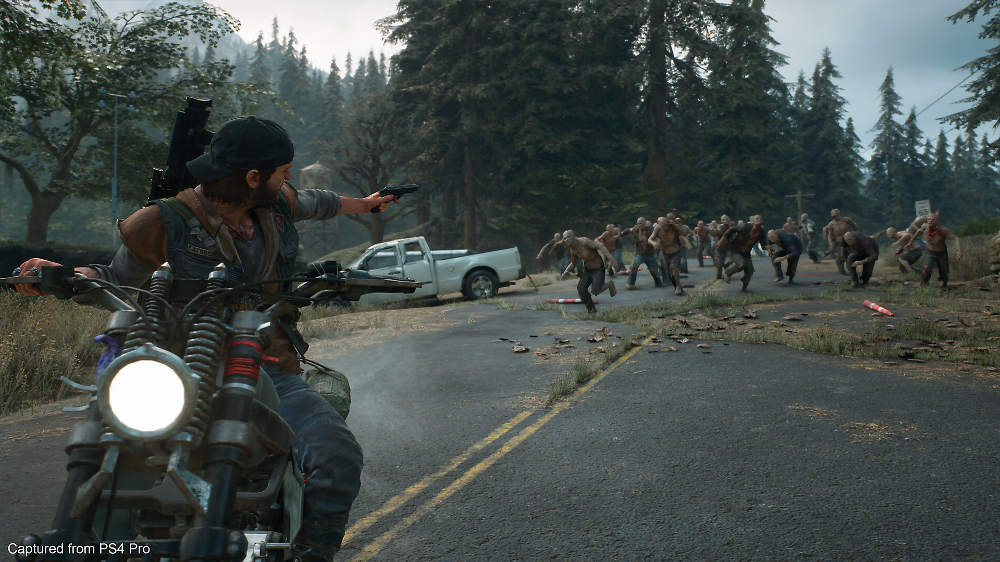

Sobre o Jogo
Days Gone é um jogo de mundo aberto em um cenário pós-apocalíptico jogado em terceira pessoa. O jogador controla Deacon St. John, um viajante e caçador de recompensas. O cenário se passa dois anos após uma pandemia global que quase dizimou a humanidade, transformando as pessoas em “Freakers” (zumbis). A dinâmica de dia e noite é um dos destaques do jogo, em que de dia os Freakers ficam fracos e lentos, porém a noite ficam rápidos e agressivos.
Começou a ser produzido em janeiro de 2015. O jogo foi desenvolvido na Unreal Engine 4. A equipe conta com John Gavin como o diretor criativo e escritor do jogo, o diretor Jeff Ross, o produtor Darren Yager, o projetista Ron Allen, o programador John Hoffman, o artista Donald Yatomi, e o compositor Nathan Whitehead. O estúdio desenvolvedor foi a SIE Bend Studio, e foi publicado pela Sony Interactive Entertainment. Foi lançado para Playstation 4 em 2019, e possui plataformas para Playstation 5 e Microsoft Windows.
Enredo Completo
Em 2017 o motociclista Deacon St. John, sua esposa Sarah Whitaker e o amigo deles Boozer tentam escapar da cidade de Farewell conforme um vírus se espalha rapidamente, transformando pessoas em criaturas agressivas e canibais. Na fuga, Sarah é esfaqueada e Deacon a coloca num helicóptero da NERO, a entidade governamental criada para administrar a crise causada pelo vírus, que parte para um campo de refugiados. Deacon e Boozer ficam para trás por conta da lotação na nave, prometendo reencontrá-la.
Dois anos se passam, a sociedade colapsou e eles lutam para sobreviver aos zumbis - chamados de frenéticos - e a ataques de grupos rivais. Deacon deduz que Sarah morreu, pois, o campo de refugiados onde foi enviada foi devastado pelos frenéticos. Atualmente ele e Boozer vivem no interior de Oregon e trabalham como caçadores de recompensas. Eles planejavam viajar para o norte para buscar melhores oportunidades, mas Boozer é atacado por membros do RIP, uma seita idólatra aos frenéticos que colocou um preço na cabeça dos dois. Deacon o resgata, mas ele é gravemente ferido e a viagem é adiada. Além de tudo isso a moto de Deacon é desmontada por moradores de um acampamento local e ele precisa prestar serviços à eles para recuperar seu veículo.
O estado de saúde de Boozer se agrava, então Deacon resolve levá-lo para seu antigo acampamento em Lost Lake. Abby, médica local, salva Boozer, que perde o braço. O líder do acampamento, Iron Mike, recentemente assinou um acordo de paz com o líder dos rippers, Carlos, mas seu braço-direito Skizzo e o próprio Deacon não acreditam que Carlos o respeitará. Em segredo, Skizzo fecha um acordo paralelo e entrega Deacon em troca da paz entre os grupos, mas Deacon escapa e descobre que Carlos, na verdade, é Jessie Williamson, um ex-parceiro. Voltando a Lost Lake, sob ataque dos rippers, Deacon denuncia Skizzo a Iron Mike e um novo acordo de paz é selado. Skizzo é preso, mas Deacon sabe que ele está certo em desconfiar dos rippers. Decide, então, com a ajuda de Boozer, destruir uma represa, inundando o território dos rippers. Em seguida, ele enfrenta e mata Carlos, encerrando a seita.
Paralelamente a esses eventos, Deacon avista helicópteros da NERO sobrevoando Oregon. Um dia, ele flagra uma dessas aeronaves pousando e investiga soldados e cientistas realizando pesquisas de campo. Ele descobre que eles estão ligados a James O’Brian, um pesquisador da NERO que acompanhou Sarah no helicóptero. Com esperança de que Sarah também esteja viva, Deacon o contata e eles negociam um acordo: Deacon secretamente colhe informações a cada visita da NERO na região de James o ajuda a rastrear o possível paradeiro de sua esposa.
Eventualmente, ele descobre que ela pode ter sido levada à região de Crater Lake, a sudeste de Lost Lake, que está sob poder da milícia de Deschutes County, liderada pelo coronel Garret. Deacon resolve viajar até lá, e é recrutado pelo capitão Kouri e logo reencontra Sarah, que está desenvolvendo uma arma biológica para a milícia usar contra os frenéticos. Deacon tenta levá-la, porém ela fica para concluir seu trabalho. Assim, Deacon resolve permanecer com ela, prestando trabalho aos milicianos e conquistando a confiança de Garret e Kouri. Nesse tempo Deacon descobre que a pesquisa que Sarah desenvolvia antes da pandemia foi usada, sem que ela soubesse, para fabricar o vírus, onde o objetivo original era criar uma arma biológica, que acaba vazando e saindo de controle. Com sentimento de culpa, ela resolve tentar criar um antídoto, e não uma arma como Garret acredita.
Querendo acelerar as pesquisas, Garret decide confinar Sarah na Arca, um complexo de cavernas onde ele pretende armazenar conhecimento humano a ser aproveitado após a extinção dos frenéticos. Deacon e Sarah desertam para que ela continue a pesquisa no laboratório antigo onde ela trabalhava, fora do território da milícia, e pede que James os resgatem de helicóptero, mas no mesmo dia Skizzo se alista e emite falsas acusações contra Deacon. O caos é gerado, e James é forçado a abandonar o local, Deacon é preso e Garret decide destruir todos os campos a norte de Crater Lake. Kouri liberta Deacon, alegando que está cansado das loucuras do coronel e que pretende desertar com alguns outros homens. Deacon é convidado a acompanhá-los, mas ele ainda quer resgatar sua esposa, então ele retorna a Lost Lake.
Deacon chega depois de um ataque da milícia que conseguiu ser repelido. Iron Mike morre por conta dos ferimentos de batalha e Deacon lidera um ataque preventivo contra o quartel-general da milícia. Na batalha Deacon mata Skizzo, mas é rendido ao confrontar Garret, que morre por envenenamento causado por Sarah. A milícia é dissolvida e seus acampamentos começam a ser controlados por aliados de Deacon, Sarah e Boozer, que se estabelecem em Lost Lake.
Spoiler (cena final): depois da história principal, James marca um encontro com Deacon. James avisa que o vírus está evoluindo muito rapidamente e o pior ainda está por vir. Em seguida ele remove a máscara que sempre oculta seu rosto e revela ser um frenético que conseguiu manter as emoções e capacidades intelectuais humanas. Antes de ir embora, ele diz que a NERO está chegando e não há nada que Deacon possa fazer a respeito.
Personagens
Deacon St. John: Deacon Lee St. John, também chamado de Deek, é o protagonista do jogo Days Gone. Viúvo de Sarah, ele é um ex-membro do Mongrel Motorcycle Club e agora é um mercenário caçador de recompensas.

Boozer: William Gray, mais chamado de Boozer, é o deuteragonista de Days Gone e companheiro de Deacon.

Boozer: Sarah Irene Whitaker, é a tritagonista de Days Gone, tendo um papel vital na história de fundo do jogo. Sarah é uma cientista pesquisadora e botânica, além de esposa do protagonista. Se presume que ela morreu no começo do jogo.

J. Michael Wilcox, também conhecido como Iron Mike, é um dos principais em Days Gone. É um sobrevivente e líder do acampamento em Lost Lake na região do Oregon, nos Estados Unidos.

Skizzo: Raymond Skizzo Sarkozi é o antagonista secundário e o boss final em Days Gone. É um membro do acampamento de Iron Mike e trabalha como um dos chefes de segurança.
Carlos: Jessie Williamson, também conhecido com Carlos, é o antagonista principal na primeira metade de Days Gone. Renunciando ao seu nome, ele é o líder dos Rippers, um culto que adora aos Freakers.
é um dos aliados principais em Days Gone. Ele é membro da NERO, e se vê obrigado a cooperar com Deacon, formando um trato com ele.

Matthew Garret: Coronel Matthew Garret é o principal antagonista na segunda metade do jogo Days Gone. Garret é fundador de uma milícia durante o apocalipse para erradicar os Freakers. Entretanto, suas visões fanáticas religiosas gradualmente o fizeram desestabilizar, tornando- se um perigo.

Derrick Kouri, também chamado de capitão Kouri, é um dos principais aliados em Days Gone. Ele é capitão do Diamond Lake, pertencente à milícia de Garret, e é o segundo líder da milícia.
Tipo e Gameplay
O jogo é um horror de sobrevivência, com foco na ação e aventura. Os jogadores podem carregar pelo menos duas armas de fogo por vez, ou usar armas brancas como machados, embora pareçam degradar e quebrar rapidamente. O corpo a corpo também se estende a mortes ambientais contextuais. Os jogadores também criam novos itens para melhorar a eficiência do combate, como coquetéis molotov e bombas de proximidade.
A motocicleta de Deacon também é fundamental para o jogo, servindo não apenas como transporte, mas também como um estoque móvel para armazenar munição e suprimentos, que o jogador pode acessar quando necessário. A motocicleta é personalizável, para melhor se adequar aos diferentes ambientes que precisará percorrer. Além disso, ao lado do minimapa, um pequeno medidor indica que a bicicleta tem uma quantidade finita de combustível e os jogadores precisarão procurar mais, a fim de evitar ficarem presos.
O jogo também implementa um sistema de clima dinâmico, com cada tipo de clima tendo um efeito diferente. A chuva faz com que as estradas tenham menos tração e reduz o ruído, tornando mais fácil se esgueirar, embora os inimigos sejam capazes de se esgueirar mais facilmente em Deacon também, ou neve, que reduz a visibilidade e também dá aos freakers um impulso em força.
Vale ressaltar que o jogo originalmente apresentava escolhas narrativas, como decidir se um personagem deveria ou não ser morto por misericórdia, ou deixado para o infectado matar. Posteriormente, eles foram removidos, pois os desenvolvedores não conseguiam encontrar uma maneira eficaz de mostrar como afetariam a história.
Avaliações e Comentários

"A jogabilidade de Days Gone é bastante intuitiva, sem a necessidade de mil botões para mil comandos. Inclusive, remete a de The Last of Us, outro exclusivo da Sony. Basta saber mirar, atirar, se esquivar e correr (muito).
A variedade de armas, tanto de fogo quanto brancas, não é muito grande, mas dá para se virar bem com uma pistola e um riffle. A munição, aliás, é limitadíssima, e cada bala vale ouro -- faça bom uso delas e cuide do preparo físico, pois muitas vezes correr será a melhor das soluções. Prepare-se para ficar com o dedão colorido de tanto pressionar o R3...
Viagens de dois quilômetros costumam beber todo o combustível, e fazer umas pausas nas viagens é quase que obrigatório para encontrar galões de gasosa espalhados pelo mapa. É um alívio ver que a gasolina está 100% abastecida, mas igualmente desesperador ler o aviso de que "a motocicleta precisa de combustível". Movimento é vida, ainda mais quando estamos cercados de frenéticos. Mesmo sem falas ou vida, a motocicleta é um dos protagonistas de Days Gone e dirigi-la não é nada complicado e cansativo. Passamos grande parte do tempo montados nela, o único veículo disponível para que usemos, indo de norte à sul, passando por túneis escuros e amontoados de barricadas.
Os bugs causaram outros transtornos. Às vezes, o áudio mandou um abraço e foi embora, deixando momentos no completo silêncio. O som ambiente chegou a cair repentinamente e, não fosse o mapinha -- que alerta quando o perigo se aproxima --, não perceberia a presença de Frenéticos e seu tão característico som.
Uma vez que o game é single-player e descarta o multiplayer, a trama também é um fator crucial e um dos pontos fortes. Nos apegamos a Deacon, compreendemos sua solidão e a busca por uma razão de existência em meio a um mundo devastado. Em missões secundárias, revisitamos o passado dele com Sarah e descobrimos mais da parte humana e sensível do personagem principal. Até o final, porém, teremos mais perguntas do que respostas sobre o que realmente aconteceu com o mundo.
O visual está deslumbrante, e confesso que, vez ou outra, me peguei parado contemplando a natureza selvagem ao meu redor. Por ser um jogo de mundo aberto, o mapa é grande, mas as distâncias não são exorbitantes. Dá para andar por todas as regiões sem se entediar."
Prós
- Sensação de viver o apocalipse;
- Protagonista carismático a sua maneira;
- Hordas de frenéticos são assustadoras;
- Variedade de tarefas;
- Horas e horas de jogatina.
Contras
- Bugs de áudio e imagem;
- Constantes quedas de frame;
- Loadings extremamente demorados.
Review de Víctor Aliaga em IGN.

"As similaridades com a série de TV The Walking Dead são evidentes desde o início da aventura. A primeira hora de jogo é muito boa. A ação e a relação de amizade entre os dois personagens são muito bem estabelecidas e desenhadas e os tutoriais são tão claros quanto a fluida jogabilidade do game. Porém, após essa parte introdutória recheada de qualidade, quando somos lançados ao mundo aberto de Days Gone, a história perde o ritmo de forma significativa. Durante algumas horas somos impelidos a realizar missões secundárias e de pouquíssimo desenvolvimento da trama que dará o tom da história de Deacon.
Mas nem tudo está perdido. Após essas horas iniciais, o jogo engata bem. As redes de relacionamento começam a se desenvolver e evoluir, as dinâmicas sociais do jogo começam a tomar forma e nosso personagem aos poucos vai se desenhando de um jeito a criar laços com o jogador e com o mundo que o cerca. Junte a isso as pistas sobre o que de fato aconteceu/está acontecendo no mundo de Days Gone e, enfim, temos uma bela experiência digna da Sony. Muitos momentos são de emocionar!
A jogabilidade de Days Gone é sólida, estável e muito bem executada. O movimento do personagem é bom e dinâmico, se ajusta tanto às abordagens mais furtivas quanto às mais explosivas, se assim posso dizer. Aliás, a variedade de abordagens é de extrema importância para o game já que enfrentamos zumbis ágeis, humanos com armas e animais silvestres.
Os inimigos tem uma inteligência artificial um tanto confusa é preciso reconhecer. Às vezes são extremamente inteligentes, deduzindo onde você está escondido de forma até perspicaz demais, porém de vez em quando são completamente displicentes e se entregam à morte de forma muito burra. Faltou polidez. Muitas vezes parece que os zumbis são mais espertos que os humanos.
A mecânica da motocicleta é muito boa. Sim, é preciso se atentar para a necessidade de gasolina e para a durabilidade do veículo, mas ela é ágil e de extrema importância, além de ser bem divertido de atropelar zumbis e outros inimigos pelo caminho. Minha crítica à moto recai sobre dois pontos.
- A necessidade de se parar em pontos de abastecimento a todo tempo, mesmo quando usamos a opção de viagem rápida, o que torna a experiência um pouco frustrante;
- A falta de interação da moto com missões do jogo, se limitando quase exclusivamente a um meio de transporte e de socorro em situações difíceis.
Days Gone tem um ponto muito negativo, sua performance é ruim. Jogar em um PS4 padrão é se preparar para enfrentar momentos de queda de FPS no abismo. Muitas vezes cheguei próximo aos 10, vendo a imagem travar e meus comandos do joystick se perderem. Ocorreu de me chocar contra obstáculos, cair da motocicleta e acabar morrendo em uma tentativa de fugir enquanto a performance estava baixa. O pacote de atualização do primeiro dia melhorou muito a experiência, mas ainda enfrento problemas pontuais. Em certas ocasiões, é comum a textura não carregar de imediato e você ficar vagando por um mundo que parece ser feito de massa de modelar.
Na minha opinião, esse quesito técnico deixa claro que o jogo chegou em um momento um tanto indevido. Acredito que está muito mais para um jogo dos próximos consoles e de PC do que da atual geração PS4. Isso me leva a crer que, apesar da retrocompatibilidade do PS5, Days Gone possivelmente terá um lançamento dedicado ao novo videogame da Sony. Mas também não se assuste, esses problemas não são frequentes ao ponto de tornar a experiência de Days Gone ruim, é apenas um ponto negativo.
Days Gone não é um jogo perfeito, mas é um ótimo game de zumbi. Seu mundo aberto é rico, seus personagens são bem desenvolvidos, a trilha sonora é tocante e a jogabilidade é divertida. Sua história, apesar de tropeçar em alguns pontos, é muito cativante e mostra mais uma obra de qualidade da Sony."
- Visual, ambientação e gráficos - 8.5
- Jogabilidade - 8
- Diversão - 9
- Áudio e trilha-sonora - 9
- Trama e roteiro - 8
Review de Ricardo Carvalho em Última Ficha.
Comentário pessoal: Enquanto escrevia e pesquisava sobre Days Gone, acabei lembrando de Metro pelo estilo e temática parecidos. Lendo sobre reclamações de bugs, comecei a ponderar se Days Gone teria sido um projeto para bater de frente com Metro.

Além de parecidos em vários pontos, suas datas de lançamento tem apenas dois meses de diferença (Metro Exodus em 15 de fevereiro de 2019 e Days Gone em 26 de abril de 2019), seus anos de produção começaram bem próximos (Metro Exodus em 2014 e Days Gone no começo de 2015), e também vale ressaltar que houve Metro 2033, Metro Last Night e Metro Redux antes de começar a ser produzido Metro Exodus, ou seja, Metro é uma franquia sólida que conquistou vários fãs em vários anos de produção. Creio que Days Gone foi apressado por conta do lançamento de Metro Exodus, deixando assim vários bugs no jogo e algumas pontas soltas em sua história.